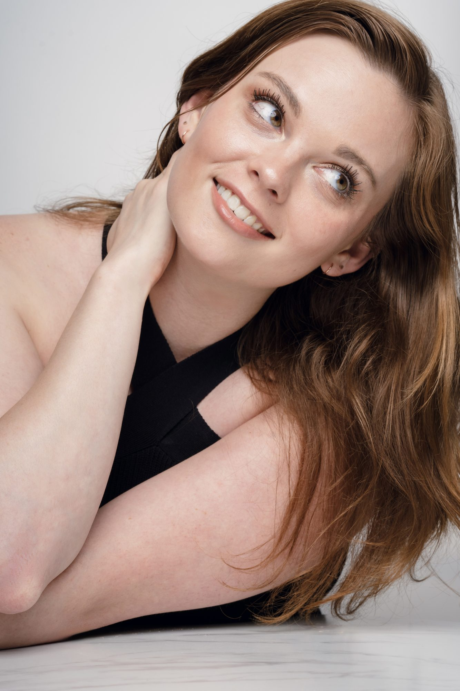

Anna Catherine Smith
A New York–based actor with a comic spark and a heart-forward presence, sure to leave a lasting impression.
“Nearly flawless.”

Reels
About
Anna Catherine Smith is a New York–based actor whose work moves easily between camera and stage.
She has spent years training on camera with Bob Krakower Studio and Eric Reis, building the stillness, specificity and spontaneity that screen work demands. Her on-camera credits include national commercial campaigns for Golden Corral and Pepsi Drips, as well as stand-in and featured background work on Saturday Night Live.
Onstage, she brings that same truthfulness to a wide range of roles: Cathy in The Last Five Years, Medium Alison in Fun Home, Sophie in Mamma Mia!, and Belle in Beauty and the Beast. She has performed with regional theatres across the country, including the Engeman Theater on Long Island and Timber Lake Playhouse.
Anna holds a BFA from Pace University. Whatever the medium, she’s drawn to stories that feel real, with a comic spark, an open heart, and a little bit of magic.
- Height
- 5′7″
- Hair
- Red
- Eyes
- Hazel
- Union
- AEA
Credits
Download résumé (PDF)Film, television and commercial
| Project | Role | Company / director |
|---|---|---|
| Saturday Night Live | Stand-in, featured background | NBC |
| Golden Corral | Principal | Dir. Jeff Bitsack |
| Pepsi Drips | Hero | Regal Cinemas |
Training
- Film and TV
- Bob Krakower Studio, Eric Reis
- Theatre
- Bob Cline, Nidra Sous La Terre, JV Mercanti, Michael Warner, Lawrence Ballard
- Voice
- Amanda Flynn, Katy Wolfe, Deanna Surber
- Dance
- Sean McKnight, Lisa Hopkins, Scott Jovovich, Kat Wildish
- Education
- BFA Musical Theatre, Pace University
- Skills
- Choral training, two-point harness flying (5th Wall Studio), turntable experience, horror scream
Theatre
| Production | Role | Theatre / director |
|---|---|---|
| The Last Five Years | Cathy Hiatt | River & Rail Theatre (Ethan Graham Roeder) |
| Fun Home | Medium Alison | River & Rail Theatre (Jessica Holt) |
| Mamma Mia! | Sophie | Argyle Theatre (Antoinette DiPietropolo) |
| Scarlet Pimpernel | Ensemble, u/s Marie | Engeman Theater (Paul Stancato) |
| Head Over Heels | Philoclea | Schimmel (Austin Regan, Ellenore Scott) |
| Beauty and the Beast | Belle | Timber Lake Playhouse (Paul Stancato) |
| The Little Mermaid | Ariel | Timber Lake Playhouse (Paul Stancato) |
| What a Wonderful World (premiere) | Lucy | Timber Lake Playhouse (Paul Stancato) |
| Into the Woods | Florinda | Timber Lake Playhouse |
| The Full Monty | Pam | Timber Lake Playhouse |
| Urinetown | Hope Cladwell | Oak Ridge Playhouse (Reggie Law) |
| Guys and Dolls | Lt. Brannigan, u/s Sarah | Pace University (Rachel Lee) |
| Sunday in the Park with George | Mrs., u/s Dot | Pace University (JV Mercanti) |
Concerts and readings
| Event | Role | Director |
|---|---|---|
| Showtune Blowout | Harold Hill | Sam Pinkleton |
| James M. Nederlander Memorial Concert | Lead soloist (“Jimmy”) | Scott Ellis |
| Carousel bench scene | Julie Jordan | Producer’s Perspective (Jack Viertel) |
| Nikola Tesla Drops the Beat | Ensemble | Nikko Benson |
| Michael John’s D.B. | Soloist | Michael John LaChiusa |
| Amaze Light Festival | Lead vocalist | Antoinette DiPietropolo |
Press
“Smith is nearly flawless. Her singing is exceptional.”
“Broadway level vocals.”
“She excels in texturizing her voice for emotional impact.”
“‘Changing My Major’ was a show-stopper.”
“Lucy Wagner, played by Anna Catherine Smith, was my favorite character.”
Production photography for The Last Five Years by David Johnson and by Aaron Ingram with House of Lamar, courtesy River & Rail Theatre.
Book Anna
For auditions, bookings and availability, reach out to her agent at BLOC or to Anna directly.